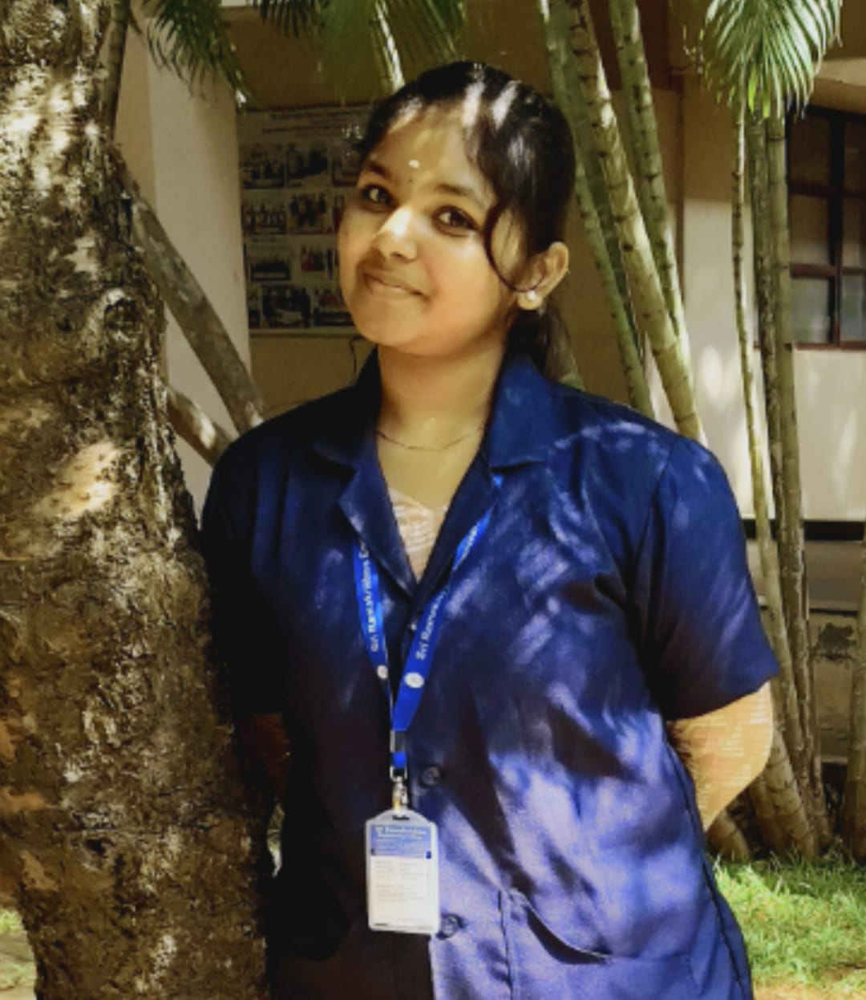
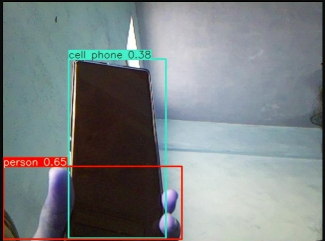
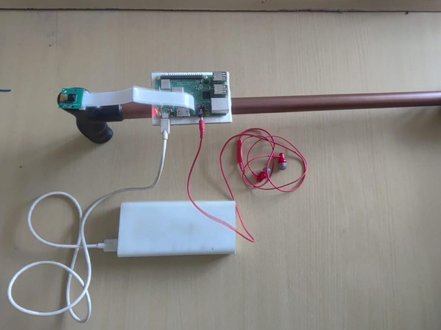

Electronics and Communication Engineering Student

Passionate about Embedded Systems, Web Development, Artificial Intelligence and IoT. I enjoy learning new technologies and building innovative projects that solve real-world problems.
I am currently pursuing a Bachelor's degree in Electronics and Communication Engineering. I enjoy working on embedded systems, web technologies and AI-based applications. My goal is to continuously improve my technical knowledge and contribute to meaningful engineering solutions.
Present Third year
Completed with good academic performance.


This project is about making a special cane called a Smart Cane. The Smart Cane uses a YOLO system to help people who cannot see well. It has a Raspberry Pi 3 B+. A Pi Camera that take pictures of what is around them. The YOLO system looks at these pictures. Finds things like people, chairs and other things that might be in the way. When it finds something it tells the person using the Smart Cane about it away. It does this by talking to them so they know what is around them. Can avoid bumping into things. The project uses computers and cameras to make a tool that really helps people who cannot see. It makes it easier for them to move around stay safe and be independent. The Smart Cane is an example of how YOLO and other technologies can be used to make life better, for visually impaired individuals.